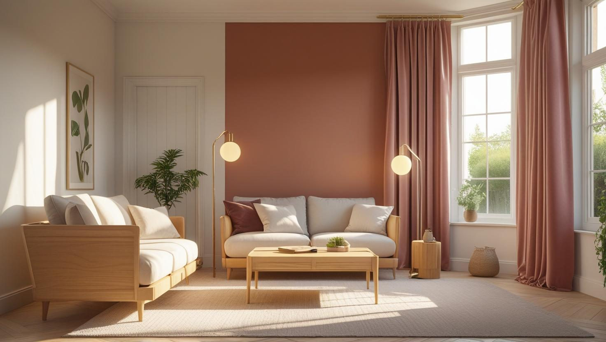
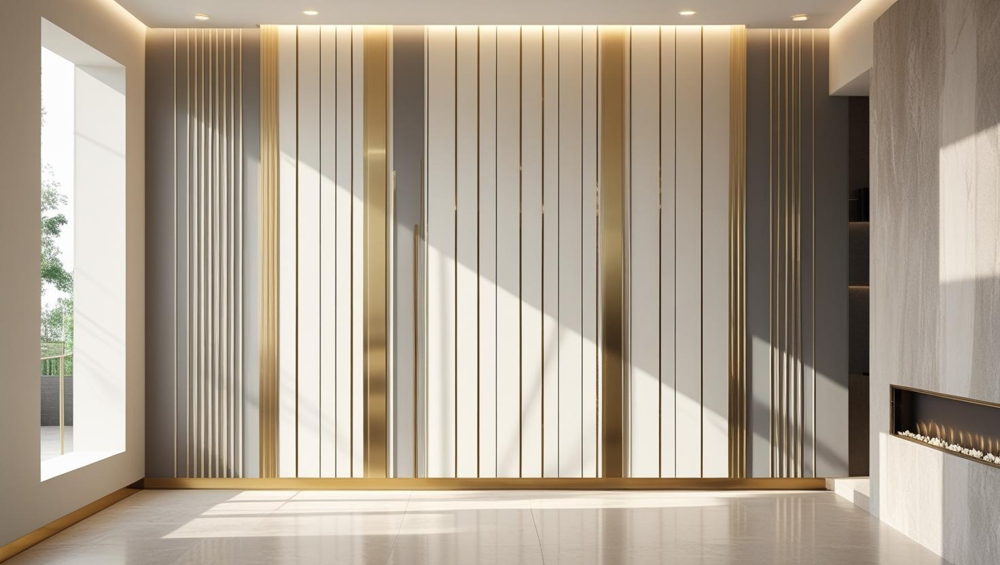

İstanbul Çatalca Profesyonel Boya Ustası
Çatalca'da yazlık, müstakil ev ya da çiftlik binası mı boyatacaksınız? 20 yıllık tecrübemizle nemi, rüzgârı ve mesafeyi hesaba katan bir iç ve dış cephe boya planı hazırlıyoruz.
Çatalca'da Boya Badana: Müstakil Ev ve Köy Yerleşimleri
Çatalca boyacı talebi İstanbul'un diğer ilçelerinden farklı bir yapı stoğuna denk geliyor: ağırlıkla müstakil ev, bahçeli konut ve köy yerleşimleri.
Müstakil evlerde iş çoğu zaman iç cephe ile sınırlı kalmıyor; dış cephe, bahçe duvarı ve ahşap doğrama da gündeme geliyor. Bu yüzeylerin her biri farklı hazırlık ve farklı boya sistemi istiyor.
Çatalca boya ustası işlerinde mesafe, ekip planlamasında hesaba katılan bir kalem. Keşif randevusunu diğer ilçelere göre biraz daha önceden planlıyoruz.
Hizmetlerimiz

İç Mekan Boyama
Çatalca'da iç mekân boyası, merkezdeki apartman dairelerinden kırsal mahallelerdeki müstakil evlere kadar farklı yüzeylerle karşılaşır. Uzun süre kapalı kalan evlerde boyadan önce nem ve küf izleri giderilir; oturulan evlerde eşyalar örtülerek oda oda ilerlenir.
- Müstakil ev oda ve tavan boyası
- Küf izi temizliği ve astar
- Merkezde daire boyama
- Kiler ve bodrum duvarı boyası

Dış Cephe Boyama
Kırsal mahallelerdeki müstakil evlerde dış cephe boyası, çatlak ve kabaran sıva onarımıyla birlikte planlanır. Saçak altı, pencere denizlikleri ve metal korkuluklar da aynı keşifte değerlendirilir.
- Köy evi ve villa dış cephesi
- Kabaran sıva ve çatlak onarımı
- Saçak altı ve denizlik boyası
- Metal kapı ve korkuluk boyası

Dekoratif Boyama
Bağ ve çiftlik evlerinin rustik havasına uyan taş ya da tuğla dokusu, şömine duvarında veya giriş holünde uygulanabilir. Modern müstakil evlerde ise sade bir vurgu duvarı çoğu zaman yeterli olur.
- Şömine duvarında taş efekti
- Rustik tuğla dokulu duvar
- Giriş holü vurgu duvarı
- Eskitme ahşap görünümü
Fiyat Tablosu
| Hizmet Türü | Metrekare Fiyatı | Ortalama Süre (100m²) | Garanti |
|---|---|---|---|
| İç Cephe Boyama | 100-200 TL | 2-3 Gün | Uygulama kapsamına göre |
| Dış Cephe Boyama | 150-280 TL | 3-5 Gün | Uygulama kapsamına göre |
| Dekoratif Boyama | 250-500 TL | 4-7 Gün | Uygulama kapsamına göre |
| Ofis Boyama | 120-220 TL | 2-4 Gün | Uygulama kapsamına göre |
Metrekare fiyatları yaklaşık ön değerlendirme aralığıdır. Uygulanacak ölçüm yöntemi, boyanacak alanın kapsamı, yüzey durumu, tamirat ihtiyacı, kat sayısı ve malzeme seçimi keşif sırasında netleştirilir.
Dış cephe boya fiyatları uygulama alanı için yaklaşık 150–280 TL/m² aralığındadır. Kesin hesaplama yöntemi ve teklif; yüzey durumu, bina yüksekliği, erişim veya iskele ihtiyacı, tamirat kapsamı, boya sistemi ve uygulanacak kat sayısına göre keşif sırasında netleştirilir.
Uygulama kapsamına göre işçilik garantisi sağlanır. Garanti kapsamı ve istisnaları teklif veya iş sözleşmesinde belirtilir.
Bu rakamlar İstanbul Boyacılık'ın 2026 gösterge fiyat aralığıdır. Bir piyasa ortalaması değildir. Kesin fiyat; yüzey durumu, hazırlık ve tamirat miktarı, uygulanacak kat sayısı, seçilen malzeme sınıfı, ulaşım ve kat koşulları ile evin eşyalı mı boş mu olduğu keşifte görüldükten sonra belirlenir.
Çatalca'da aralığı belirleyen ana etken işin iç cephe ile mi sınırlı olduğu yoksa dış cephe, bahçe duvarı ve ahşap doğramayı da mı kapsadığı. Mesafe nedeniyle işin tek seferde planlanması ekip açısından önemli.
Yazın ya da Hafta Sonları Kullanılan Evlerde Nem ve Küf
Aylarca kapalı kalan evlerde duvarlar havalanmadığı için nem birikir; Çatalca'daki yazlık ve hafta sonu evlerinde boyadan önce bu nemin kurutulması ve küfün temizlenmesi gerekir.
Kapalı dönemde en çok etkilenen yerler dış duvara bakan oda köşeleri, dolap arkaları, banyo ve zemin kattaki duvar dipleridir. Küf lekesinin üzerine doğrudan boya sürülürse leke bir süre sonra yeni boyanın içinden yeniden görünür.
- Açılışta: Ev iyice havalandırılır ve nemli duvarların kuruması beklenir.
- Temizlik: Küflü alanlar fırçalanıp küf giderici ile işlenir, kuruduktan sonra astarlanır.
- Boya seçimi: Nem gören odalarda nefes alabilen ve küfe dayanıklı iç cephe boyası kullanılır.
- Kapanışta: Ev kapatılırken dolap kapaklarını aralık bırakmak ve mobilyaları duvardan biraz uzağa çekmek, bir sonraki sezonda küf oluşumunu azaltır.
Nemli duvarlarda hangi boyanın seçileceğini ayrıntılı anlatan rutubetli ve küflü duvarlar için boya rehberimize göz atabilirsiniz.
Açık Arazideki Müstakil Evlerde Rüzgâr, Yağış ve Don Etkisi
Çatalca'da çevresi açık, rüzgârı ve yağışı doğrudan alan müstakil evlerde dış cephedeki bozulma çoğu zaman sıvaya sızan suyla başlar; bu yüzden boya, yüzey onarımıyla birlikte düşünülmelidir.
Kılcal çatlaklardan giren su soğuk gecelerde donup çözülürken sıvayı gevşetir ve boyayı kabartır. Keşifte saçak altları, pencere denizlikleri, oluk bağlantıları ve zemine yakın duvar dipleri ayrıca kontrol edilir.
- Gevşek sıvanın kırılıp yenilenmesi
- Kılcal çatlakların elastik dolguyla kapatılması
- Dış cephe astarı ve su itici son kat
- Yağışlı ya da donlu günlerde uygulama yapılmaması
Dış cephede hangi boya türünün neden seçildiğini plastik boya ile silikonlu boya arasındaki farkları anlatan yazımızda bulabilirsiniz.
Çatalca'da Depo, Atölye ve Çiftlik Binalarında Boya
Çatalca'nın kırsal mahallelerinde boya işi konutla sınırlı kalmaz; depo, atölye ve çiftlik binalarında yüzeyler geniş, kullanım koşulları ise ağırdır.
- Metal kapı ve sac yüzeyler: Pas alınmadan sürülen boya kısa sürede kabarır; önce pas temizlenir, ardından pas önleyici astar uygulanır.
- Briket ve tuğla duvarlar: Emici yüzeyler astarla doyurulmadan boyanırsa boya sarfiyatı artar ve renk alacalı çıkar.
- Yıkanan bölümler: Sık yıkanan ya da tozlanan alanlarda suya ve silmeye dayanıklı bir boya sistemi seçilir.
- Ekipman ve ürün alanları: Boyanmayacak makine, alet ve ürün stoğu örtülür; iş bölüm bölüm ilerletilir.
Çatalca Boya Ustası Keşfinde Neler Ölçülür, Malzeme Nasıl Planlanır?
Uzak mahallelerde eksik bir malzeme ya da atlanan bir yüzey işin yarıda kalmasına yol açabileceği için keşifte bütün kalemler tek bir listede toplanır.
Keşifte ölçülen ve teklife yazılan başlıca kalemler:
- Oda oda duvar ve tavan metrajı
- Dış cephe, bahçe duvarı ve saçak altı yüzeyleri
- Ahşap ve metal doğramaların adedi ve durumu
- Sıva tamiri, küf temizliği ve astar ihtiyacı
Renk kodları ve boya miktarı keşif notunda netleştiği için uygulama günü malzemenin eksiksiz getirilmesi planlanır. Tahmini bir bütçe için sayfanın üst kısmındaki fiyat tablosuna bakabilirsiniz; evinizin kesin tutarı bu kalemler ölçüldükten sonra yazılı olarak bildirilir.
Çatalca’da Hizmet Verdiğimiz Mahalleler
İlçe merkezinden Karacaköy'e ve Karadeniz kıyısındaki Yalıköy'e uzanan geniş alanda Çatalca boyacı olarak çalıştığımız mahallelerden bazıları aşağıda; listede olmayan köy ve mahalleler için de adresinizi paylaşabilirsiniz:
Çatalca Mahalleleri
- Çatalca Akalan Mahallesi
- Çatalca Atatürk Mahallesi
- Çatalca Aydınlar Mahallesi
- Çatalca Bahşayiş Mahallesi
- Çatalca Başak Mahallesi
- Çatalca Belgrat Mahallesi
- Çatalca Celepköy Mahallesi
- Çatalca Çakıl Mahallesi
- Çatalca Çanakça Mahallesi
- Çatalca Çiftlikköy Mahallesi
- Çatalca Dağyenice Mahallesi
- Çatalca Elbasan Mahallesi
- Çatalca Fatih Mahallesi
- Çatalca Ferhatpaşa Mahallesi
- Çatalca Gökçeali Mahallesi
- Çatalca Gümüşpınar Mahallesi
- Çatalca Hallaçlı Mahallesi
- Çatalca Hisarbeyli Mahallesi
- Çatalca İhsaniye Mahallesi
- Çatalca İnceğiz Mahallesi
- Çatalca İzzettin Mahallesi
- Çatalca Kabakça Mahallesi
- Çatalca Kaleiçi Mahallesi
- Çatalca Kalfa Mahallesi
- Çatalca Karacaköy Merkez Mahallesi
- Çatalca Karamandere Mahallesi
- Çatalca Kestanelik Mahallesi
- Çatalca Kızılcaali Mahallesi
- Çatalca Muratbey Merkez Mahallesi
- Çatalca Nakkaş Mahallesi
- Çatalca Oklalı Mahallesi
- Çatalca Ormanlı Mahallesi
- Çatalca Ovayenice Mahallesi
- Çatalca Örcünlü Mahallesi
- Çatalca Örencik Mahallesi
- Çatalca Subaşı Mahallesi
- Çatalca Yalıköy Mahallesi
- Çatalca Yaylacık Mahallesi
- Çatalca Yazlık Mahallesi
Çatalca Boyacılık Müşteri Yorumları
"Çatalca iç cephe boyama hizmeti için İstanbul Boyacılık ile çalıştım. Özenli ve temiz işçilik sağladılar. Kesinlikle tavsiye ederim."
Asım Şahin
Çatalca / İstanbul
"Çatalca dış cephe boyacı ustası ararken bulduk. Zamanında teslim ve kaliteli boya ile harika sonuç aldık."
Burcu Demir
Çatalca / İstanbul
"Ev boyama için Çatalca'da en iyisi. Disiplinli ve uygun fiyatlı hizmet için teşekkürler."
Cem Yıldız
Çatalca / İstanbul
Faydalı Bağlantılar
Çatalca boya badana planında fiyat hesabı, boya markası ve yakın ilçe seçeneklerini birlikte değerlendirmek için aşağıdaki rehberler kullanılabilir.
Çatalca'da Boya Badana İçin Merak Edilenler
Kışın kullanılmayan evimi hangi dönemde boyatmalıyım?
Dış cephe için yağışsız ve donsuz, duvarların kuru olduğu günler gerekir; bu nedenle kış ortası yerine havaların ısınıp yağışın azaldığı dönem seçilir. İç mekânda ise duvarın kuruduğundan emin olmak için evin bir süre açık ve ısıtılmış kalması, boyanın tutunmasını kolaylaştırır.
Çatalca merkezindeki apartman dairelerini de boyuyor musunuz?
Boyuyoruz. Ferhatpaşa ve Kaleiçi çevresindeki dairelerde iş genellikle duvar, tavan, kapı ve pervaz boyasından oluşur. Merdiven boşluğu gibi ortak alanlar için apartman yönetiminin kararı gerekir; bu işin teklifini daire teklifinden ayrı hazırlıyoruz.
Çatalca'ya keşfe geliyor musunuz?
Geliyoruz. Mesafe nedeniyle randevuyu biraz daha önceden planlıyoruz ve mümkünse işin tamamını tek keşifte değerlendiriyoruz. Telefonda adresi ve kapsamı aldıktan sonra gerçekçi bir gün söylüyoruz.
Müstakil evde iç ve dış cepheyi birlikte yaptırmak avantajlı mı?
Planlama açısından avantajlı: ekip tek seferde geliyor, malzeme ve kurulum tek defa yapılıyor. Ancak dış cephe hava koşullarına bağlı olduğu için iki işin takvimi her zaman üst üste gelmeyebiliyor. Keşifte buna göre planlıyoruz.
Ahşap doğrama ve bahçe kapısı boyanıyor mu?
Boyanıyor. Ahşapta önce eski katmanın durumu değerlendiriliyor; zımpara ve uygun astar aşaması ayrı bir kalem oluyor. Dış mekân ahşağında kullanılan sistem iç mekândan farklı, bunu teklifte ayrı gösteriyoruz.
Çiftlik evi, depo veya ahırda badana mı boya mı kullanılmalı?
Yüzeyin nasıl kullanıldığına bağlıdır. Kireç badana nefes alır ve ahır ya da kiler gibi nemli alanlarda tercih edilebilir; ancak zamanla tozlanır ve daha sık yenilenmesi gerekir. Silinip yıkanması gereken yüzeylerde ise astar üzerine su bazlı boya daha pratiktir. Keşifte yüzeye bakıp hangisinin işinize yarayacağını söylüyoruz.
İletişim
İletişim Bilgileri
Telefon: 0507 832 29 12
E-posta: boyaustamistanbul@gmail.com
10+ Uzman Ustamızla Çatalca ve çevresine hizmet veriyoruz.
Çalışma Saatleri: Pzt-Cmt 00:00-23:59